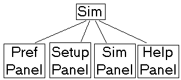
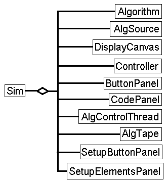

Class Design
The Sim class is the main class for this application. Its job is to manage
the interaction between top-level objects, like the display canvas, algorithm,
animation recording, and controller. Sim also creates and manages the control bar at
the top of the applet.
The user can use the control bar to select which panel
will be visible in the applet. The user can select to view preference, setup,
simulation, and help panels. The Main Classes

Sim stores pointers to each of the main objects. Objects can request
a copy of a pointer to other objects through Sim. Objects use the pointers
to send messages between objects.
The Algorithm class executes or records an execution of the algorithm for
some given data. It also manages the display of a single frame of the recording.
The AlgSource class manages the source code text of the algorithm.
It has methods to return a line of code, and the number of lines of code.
It can also add or remove lines of code. This is used to reflect the changes
the user makes graphically in the setup panel.
The DisplayCanvas class is a double buffer drawing surface. It is used in the
Sim and Setup Panels for displaying 2d projections of a 3d image of the scene.
The Controller class is a graphical VCR-like interface to the thread
playing back the recording of the algorithm's execution.
The ButtonPanel class has buttons to execute, record, and reset the algorithm.
The CodePanel class displays the source code of an algorithm. When a recording is
being played back, this class will display the line of code currently simulated
as executing, in a color different from the other text. It will also allow the
user to view the algorithm's source code, providing a scrollbar.
The AlgControlThread class controls the timing between frames of animation
in the recording playback. It has methods to change speed and direction.
The AlgTape class stores frames of the animation in a recording. It allows
sequential forward and reverse access, and can jump to the first or last
frame.
The SetupButtonPanel class is the main class for the setup panel.
It controls adding and removing data elements for the algorithm. It stores
the data locally, and only updates the algorithm when the user requests
it to be sent to the algorithm.
The SetupElementsPanel is an empty panel in the bottom half of the setup
panel. It is used to temporarily hold panels that allow the user to
edit data properties for the algorithm.